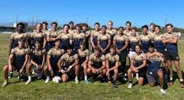

This image is a photo of me playing football. I love playing football. It helps me take away stress from school and spend quality time with my teamates.
This image is a photo of me playing rugby. Rugby is my main sport. I have always felt very welcomed on the rugby feild, and I have dreams to play in college. .